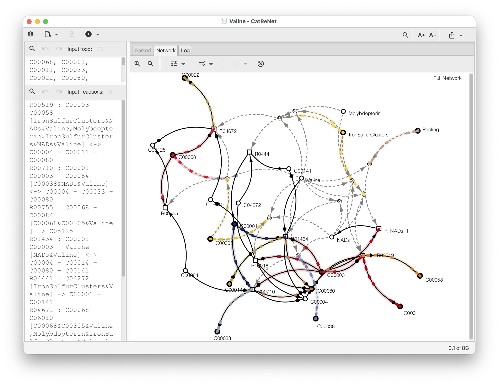

Collaborations
I am available for selected collaborations involving scientific software systems, algorithms, visualization, and advanced Java development.
Scientific Software Engineering
Design and implementation of research-grade software systems for bioinformatics, phylogenetics, and scientific visualization.
Areas include Java and JavaFX systems, cross-platform deployment, mobile scientific applications, software architecture, visualization design, and modernization of legacy software.
Algorithm Implementation
Implementation and visualization of advanced algorithms from computational biology and related fields.
This includes prototype systems, interactive interfaces, deployment workflows, and integration into larger software platforms.
Mini Projects and Software Modernization
Short focused collaborations to transform research prototypes into usable software systems.
Typical projects include: graphical interfaces, packaging and installers, GitHub workflows, macOS notarization, cross-platform deployment, and interactive visualization systems.
Workshops and Visiting Engagements
Available for workshops, block courses, visiting collaborations, and scientific software mentoring.
Topics include: advanced Java, scientific visualization, AI-assisted software engineering, algorithms in bioinformatics, and research software architecture.
Example Collaboration: CatReNet

Ongoing collaboration with Prof. Mike Steel at the University of Canterbury, together with collaborators including Dr. Joana Xavier and Prof. William Martin and colleagues at the University of Düsseldorf.
CatReNet is an interactive visualization and analysis system for catalytic and autocatalytic reaction networks.
The project originated from mathematical work on catalytic reaction systems and autocatalytic sets, for which various prototype software tools had existed previously. CatReNet was developed to provide an interactive, scalable, and visually accessible platform for exploring such systems.
Current work focuses on extending the CatReNet software system to help address questions concerning the emergence of early life and biochemical evolution.
Example Collaboration: JPICL

Collaboration with Prof. Laura Kubatko at The Ohio State University on the PICL phylogenetics system.
The original PICL C implementation is available at github.com/lkubatko/PICL .
The JavaFX-based graphical interface and cross-platform application system are available as https://github.com/husonlab/jpicl .
Work included GUI design, native-code integration, GitHub Actions workflows, cross-platform installers, and macOS notarization.
This project illustrates a focused scientific software collaboration: extending advanced computational methods with graphical interfaces, deployment workflows, and cross-platform application support.